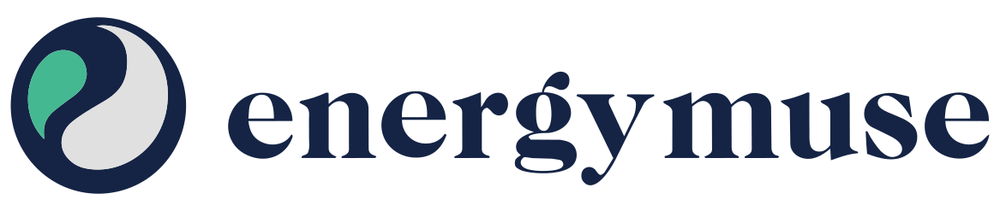

Homepage · three directionsThe site, the site brought to life, and three concepts where the energy itself is the design — plus a tool you can actually play with. Same brand, distinct intentions.
The main homepage — approved copy, the full journey: quiz, intentions, jewelry, founders, the frequency generator broadcasting, and the fold that always ends mid-sentence.
the concept filmEnergy, visualized. One continuous line of energy travels the whole page — waking, splitting into the five intentions, winding into the generator's coil, and closing into your ring — while the day fades to dusk. Scroll is the timeline.
the instrumentSeven tuned frequencies, one dial. Move it and the whole room answers — the wave shortens, the light changes colour, and the crystals that suit that tuning come forward. Built around the generator, which is the thing they are actually known for.
the shop as an objectNot a film at all — an archive you work. Every crystal on one page, mounted and priced, answering instantly as you filter by intention, form or colour.
toolDesign your own bracelet. Choose stones by intention, drop them onto a living strand that parts to receive each one, size it to your wrist, and send the finished piece straight to the bag.
toolThe Atelier’s engine, pointed at whole crystals. Choose by intention, fill a box of three, five or seven, and send it as a link — the same way a bracelet travels.
Earlier style studies (Editorial · Grid · Boutique · Cinematic) are retired but kept in history.